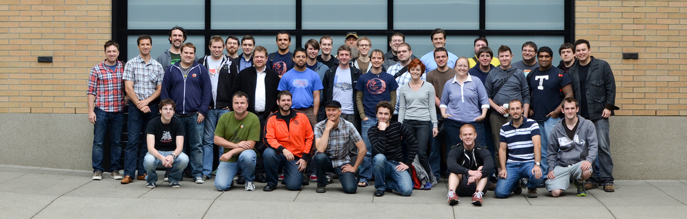
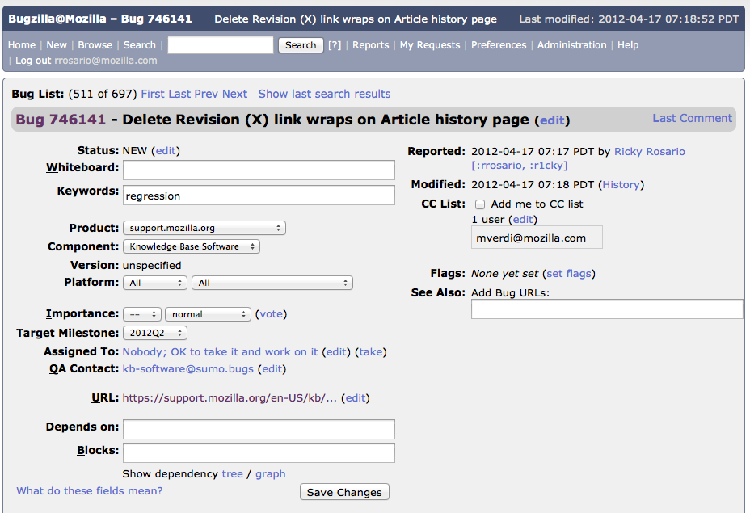
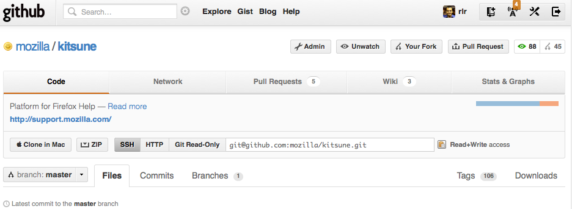
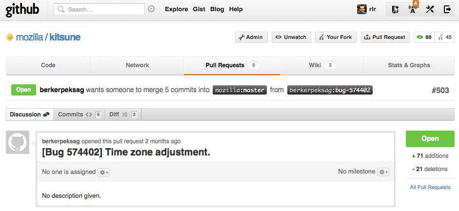
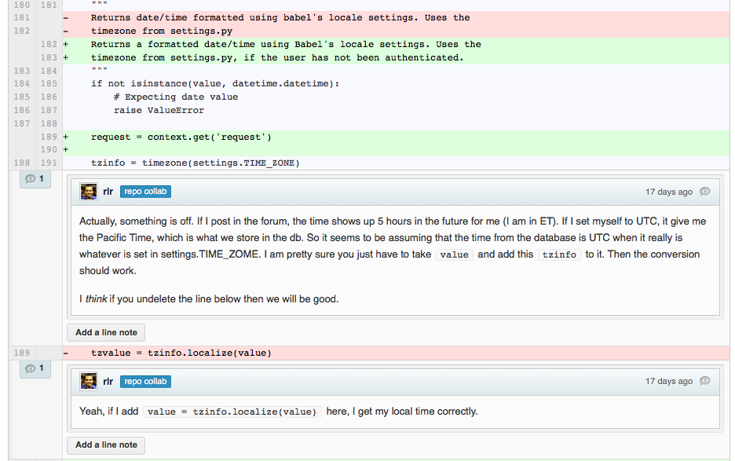
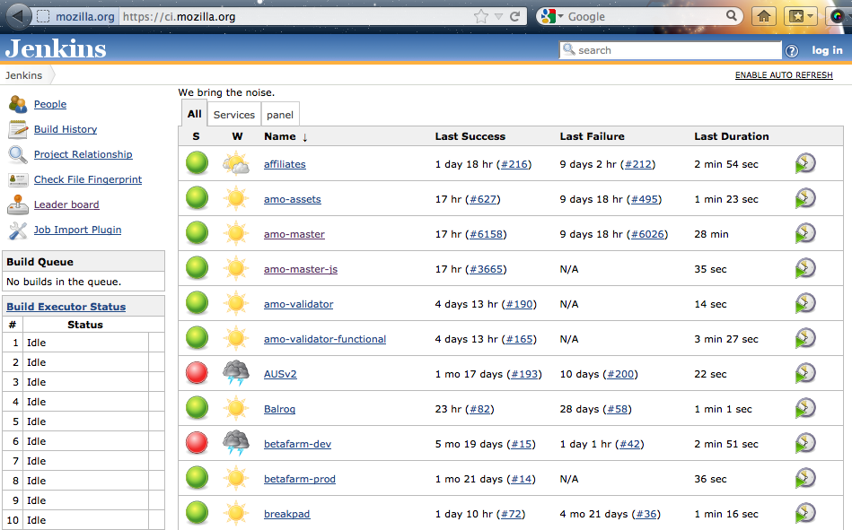
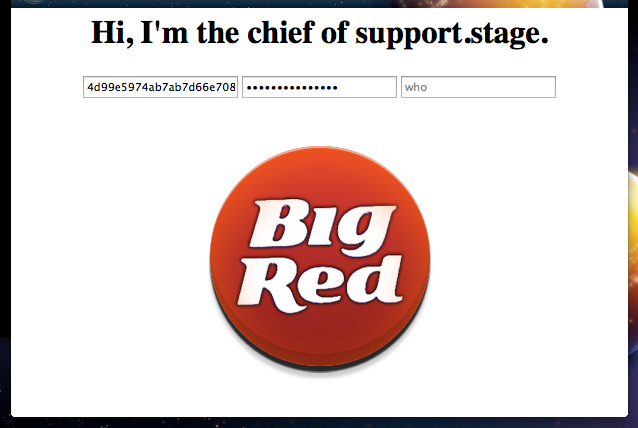

Your browser doesn't support the features required by impress.js, so you are presented with a simplified version of this presentation.
For the best experience please use the latest Chrome, Safari or Firefox browser.
WebDev at Mozilla
MozCamp LatAm 2012
About me
- Two years with Mozilla
- Lead dev for SUMO
- Grew up in Puerto Rico
- Live in South Florida
- r1cky on IRC
- ricky@mozilla.com
About us (WebDev)

WebDev Team in Portland, June 2011
~50 paid staff, ~10 contributors (excluding bug filers)
What we work on
addons.mozilla.org
addons.mozilla.jp
affiliates.mozilla.org
air.mozilla.org
blog.mozilla.com
bugzilla.mozilla.org
bugzilla.org
builder.addons.mozilla.org
byob.mozilla.com
careers.mozilla.org
ci.mozilla.rog
detodosparatodos.org
developer.mozilla.org
dnt.mozilla.org
donate.mozilla.org
getpersonas.com
hackasaurus.org
hacks.mozilla.org
hg.mozilla.org
input.mozilla.org
localize.mozilla.org
mozillalabs.com
mozilla.org
mozillians.org
mpl.mozilla.org
mxr.mozilla.org
nightly.mozilla.org
openbadges.org
pastebin.mozilla.org
planet.mozilla.org
quality.mozilla.org
releases.mozilla.org
reps.mozill.aorg
rockyourfirefox.com
services.mozilla.com
status.mozilla.com
support.mozilla.com
tinderbox.mozilla.org
tools.mozilla.com
webfwd.org
webtools.mozilla.org
wiki.mozilla.org
www-archive.mozilla.org
.........
Major sites (by traffic)
mozilla.org
2M visitors/day
addons.mozilla.org (AMO)
1.25M visitors/day
support.mozilla.org (SUMO)
450K visitors/day
developer.mozilla.org (MDN)
60K visitors/day
Our typical stack
- HTML/CSS/JS (Open Web Technologies!)
- Python+Django
- Celery
- MySQL, Memcached, Redis, ElasticSearch
Shared libraries
- We maintain and contribute to lots of open source libraries.
- Useful to sites outside of Mozilla
- Use them, report issues, contribute fixes
The dev process
Choose a bug (Bugzilla)

Github: Fork the repo (Github)

Implement fix in a branch
Pull request (Github)

Code review (Github)

Merge to master (Github)
Run test suite (Jenkins)

Deploy to dev site (Automated scripts)
Deploy to stage and prod site (push a button)

Why contribute?
- Cool, interesting, hard and FUN problems
- Scalability
- Security
- Localization
- Opportunity to build resume and work with senior developers (especially valuable for students)
- It is fun!
Demo: fix a bug
Other groups
- There are web developers all over Mozilla
- WebDev is just one of the groups
- Some groups use other cool technologies (NodeJS for browserID, for example)
Questions?